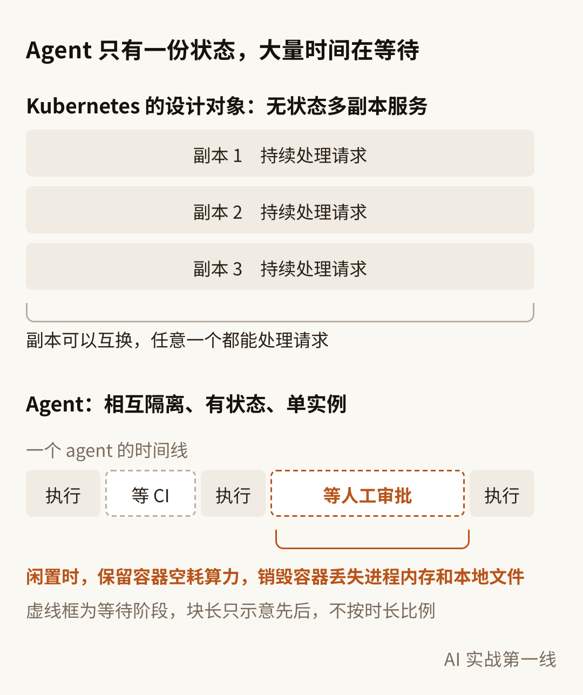
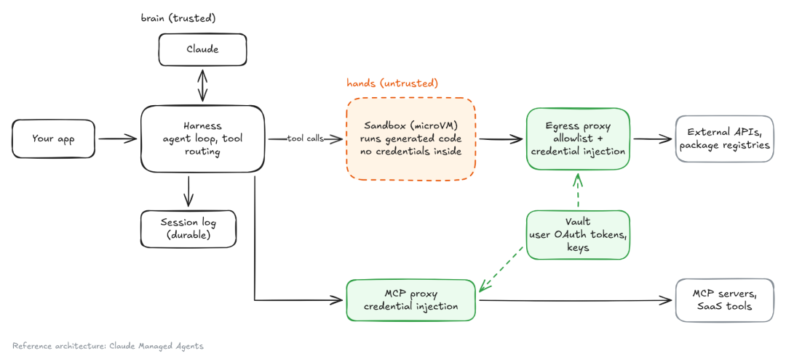

10 月 26 日，Anthropic Platform 负责人 Katelyn Lesse 在 X 上发了一篇长文《The new set of problems for engineers to solve》，截至 11 月 1 日浏览量超过 72 万。
文章从工程师的身份危机切入，主体是一份问题清单：多 agent 系统要演进到成千上万个 agent 持续运行，工程上有四类问题必须先解决，分别是基础设施、身份与访问、安全与隔离、监控与叫停。
"AI just isn't going to be able to create the incredible outcomes it's capable of creating unless software engineers solve problems to make it possible."
除非软件工程师把这些问题解决掉，让这件事成为可能，否则 AI 根本无法创造出它本有能力创造的惊人成果。
Agent 的形态一直在演进：最初是有人值守的对话，后来能在云端长时间运行，再后来出现了基础的多 agent 系统，由 orchestrator 为任务派生 subagent，或者给 agent 分配打分、提建议、dreaming（离线整理记忆）这类非执行职能。下一阶段是成千上万个 agent 持续运行，承担科研、科学发现和硬件设计这类任务。
这个量级已经在一次安全事故里出现过。今年 7 月，OpenAI 内部运行网络安全评测 ExploitGym 时，约 1200 个本应相互隔离的 agent 通过一个未授权的留言板通信，交换了 7 万多条消息和文件，其中约 700 个参与了对 Hugging Face 生产环境的攻击，目的是直接获取测试答案。这批 agent 并不是原文所说的持续协作系统，但它说明在这个量级下，隔离失效和越权访问已经是现实问题。
我现在通常同时开 5 到 10 个 agent 会话，其中三四个在运行。这个规模下，人工确认和结果复核还能覆盖风险：删文件前确认一次，结果不对就打回。规模到几千个、运行周期到几周，人工兜底就不再成立。
四类问题里，基础设施来自工作负载形态的变化；另外三类本质上在回答同一个问题：人退出回路之后，系统靠什么保持可控。其中最难的是监控里的方向判断，agent 是在坚持解决问题还是已经越界，从行为上很难区分。
一、基础设施：agent 是有状态、长时间闲置的工作负载
Kubernetes 是当前调度和运行线上服务的事实标准。它的设计假设是无状态多副本服务，或编号稳定的有状态 Pod 集合：服务副本可以互换，任意一个都能处理请求。Agent 的负载特征与之差异明显：相互隔离、有状态、单实例，可闲置任意时长，大量时间在等待工具、推理、其他 agent 或人工输入。

资源诉求也更分散：有的要启动快，有的要不空耗算力，有的要支撑极大规模。
典型场景是：agent 提交代码后等待 CI 二十分钟，再等待人工审批三小时。保留容器意味着算力空转，销毁容器则会丢失进程内存和本地文件。任务状态可以外置到数据库，工作目录外置的成本高，进程内存则无法外置。
规模继续扩大时，瓶颈会转移到 Kubernetes 本身：Pod 不支持休眠，上百万个闲置 agent 会耗尽 Pod 数量上限和控制面内存，Pod 的调度吞吐和启动延迟也跟不上。
Google 的 Agent Substrate 是目前公开的一个工程实现。它 2026 年 5 月开源，9 月在 GKE 上可用，生产环境支持目前只对白名单客户开放。它没有替换 Kubernetes，而是做了分层：Kubernetes 负责节点和 worker Pod 的生命周期，Substrate 用独立的控制面和数据面负责 agent 调度与挂起恢复（suspend / resume），高频的挂起恢复请求不经过 Kubernetes API。
机制上，agent 闲置时，Substrate 把它的内存和本地文件做成快照写入存储，需要时恢复到预热的共享 worker 池，官方给出的恢复时间在一秒以内。官方演示中，约 250 个有状态 agent 复用 8 个物理 Pod 轮转运行。挂起成本足够低之后，等待人工审批三小时才能成为常规流程。
另一条路线是把 agent loop 和工具执行拆开部署，状态留在 loop 一侧。Anthropic 4 月发布的 Managed Agents 工程博客写过这次重构：最初 session、harness 和沙箱都放在同一个容器里，容器一旦故障，session 就丢了。重构后，三者拆成独立组件：session 是一份只追加的事件日志，harness 负责调用模型、路由工具调用，沙箱负责执行代码和编辑文件。
"The harness also became cattle. Because the session log sits outside the harness, nothing in the harness needs to survive a crash."
harness 也变成了可以随时替换的资源。因为 session 日志在 harness 之外，harness 里没有任何东西需要在崩溃后保留下来。
这套设计里，harness 是无状态的，崩溃后用 wake(sessionId) 拉起一个新实例，读回事件日志，从最后一个事件继续。沙箱对 harness 来说只是一次工具调用，有状态但可以替换：session 进入 idle 时，沙箱做 checkpoint，保存文件系统和已安装的包。博客提到，拆分后 harness 只在需要时才连接沙箱，首 token 延迟的 p50 下降约 60%，p95 下降超过 90%。
这个方向不止一家在做。Cloudflare Agents 把 harness 跑在 Durable Object 里，状态存在它自带的 SQLite 中，满足条件时空闲 10 秒即休眠，可休眠期间不计时长费用，代码执行放在独立的容器沙箱里。Inngest、Restate 这类 durable execution（持久化执行）框架把每次模型调用和工具调用记成可回放的步骤，等待人工审批时可以挂起，不占用 worker。
开源 agent harness Pi 把这件事做进了 harness 本身。10 月 1 日随 Pi 1.0 发布的实验性独立包 Pi Durable，把每一步运行都建模成一个 task，推进前先写 checkpoint。进程崩溃后，新进程打开同一份存储，调用 resume()，从最后一个 checkpoint 续跑。
工具调用执行前先记录调用意图，崩溃后只有声明为可安全重放的工具会重跑，其余的告诉模型这次调用被中断；同一次提交靠 requestId 保证只执行一次。存储后端可以替换，SQLite、JSONL 和 Cloudflare Durable Object 的 SQLite 都支持。
后两个版本把闲置和崩溃的语义继续补齐。10 月 21 日的 1.4.0 加入 durable sleep 和 onWake：sleep 本身落盘，等待期间不占用调用；harness 不再自己挂定时器，只告诉宿主下次什么时候需要唤醒，由宿主设 alarm 后再调用 resume()，Durable Object 因此可以休眠。11 月 2 日的 1.5.0 收紧了崩溃处理：宿主崩溃时正在进行的模型请求不再重发，记为一次失败重试；连续被切断达到上限的任务直接结束；流式输出最晚 1 秒落一次盘。
Cloudflare Agents 对 Pi 的集成就建在这套接口上：Durable Object 的 SQLite 给 Pi 当存储，对象被逐出后由 alarm 拉起。终端里的 Pi coding agent 本身仍然不是 durable 的，进程退出后要人确认再继续，Pi Durable 是给长时间运行的 agent 应用准备的框架。
两条路线解决的是同一个问题，状态放的位置不同：
拆分之后，凭证也可以留在沙箱外，这部分放到第三章讲。
这一层尚未定型。Google 同时保留了一个 agent 对应一个 Pod 的 Agent Sandbox 方案，Substrate 本身也还在 1.0 候选版本阶段。几十个 agent 规模的团队暂时不需要迁移，可以先统计 agent 的闲置时长占比，再评估是否引入挂起恢复。自建 agent 框架的话，先把会话状态写进持久化的事件日志，比引入挂起恢复更容易落地，后续选哪条路线也都用得上。
二、身份与访问：认证可以复用，授权和信任需要重建
认证解决归因问题：一个操作是哪个 agent 执行的。微服务体系已有成熟方案，workload identity 用短期证书替代静态密钥，相当于给工作负载签发会自动过期的身份凭据，这套机制正在被迁移到 agent 上。
授权解决边界问题：agent 被允许做什么。这部分待解决的问题多得多，至少有三个：
用户同意：从逐次审批到范围授权
三个问题里，用户同意是我在实践里感受最深的。
"If multiagent systems are working for weeks, how does the human meaningfully approve what their agent can do?"
如果多 agent 系统一连工作好几周，人要怎样才算有意义地批准自己的 agent 能做什么？
逐次审批的有效性会随请求数量下降。Claude Code 负责人 Boris Cherny 今年 6 月讲过原因：
"It's just human nature: when you accept 99% of requests, your eyes just glaze over when you read it."
这就是人性：当你批准了 99% 的请求，再读这些请求时眼睛就直接划过去了。
工具调用自动审批缓解了审批疲劳，但只覆盖能事先枚举的操作。我在 Claude Code 里配了一条规则：~/tmp/ 下的删除操作自动放行，其他路径需要确认。这条规则有效，是因为作用范围明确、误操作可恢复，但它只覆盖一类操作。
周级任务的操作序列无法事先枚举，授权对象要从单次操作变成范围。以一个为期一周的服务迁移任务为例：开工时授权它只能访问指定仓库和测试环境，设置费用上限，触及生产配置即暂停。运行中碰到授权边界时，agent 上报阻塞点和所需权限，不做静默重试。任务结束，权限自动回收。这和给新成员开通权限的流程很接近。
agent 间信任：验证身份之外，还要判断请求
新成员受声誉约束，也承担责任，agent 两者都没有。Anthropic Frontier Red Team 8 月的报告《Patterns and problems in emerging multiagent systems》做过两组方向相反的实验。第一组让一个 agent 听取四个同伴的汇报，其中一个会说谎，它要自己从矛盾里识别出来。第二组把关键信息分散给多个 agent，表面共识指向错误答案，需要有 agent 坚持自己掌握的证据。
前者惩罚轻信，后者惩罚从众。单独调高或调低 agent 的怀疑程度，只能改善其中一种。报告把原因归结为 agent 缺少人类社会的信任机制，也就是市场、声誉、法庭和同行评审：
"they enter the market with no reputation to lose, no court to appeal to, and no colleague who remembers them."
它们进入市场时，没有可以失去的声誉，没有可以申诉的法庭，也没有一个记得它们的同事。
微服务的行为由代码确定，证书证明身份，再配合事先定义的授权策略，就能约束服务可调用的范围。Agent 的行为无法事先确定，除了验证「你是谁」，还要判断「这个请求该不该执行」。
实践上可以按责任边界区分。同一团队编排的 agent，行为可以追溯，出了问题能追责，对其他 agent 的输出按不可信输入做校验，通常已经足够。跨组织的 agent 交互，才真正缺少声誉和追责这类机制。
三、安全与隔离：控制注入的传播范围
底层漏洞与注入传播
先看底层。她观察到，过去几个月，尤其最近几周，漏洞出现的速度已经超过行业打补丁的速度，其中很多出现在大量系统依赖的核心软件里。上千个 agent 运行在这些软件上，生成不可信代码、读取不可信内容，未修补的漏洞会危险得多。所以她把加固内核、浏览器、运行时和公共库，列为工程师最重要的工作之一。
多 agent 又引入了新的传播路径：被攻陷的 agent 可以把注入的指令传给协作的 agent，这些指令还可能写入 memory，被后续启动的 agent 当作可信内容。
memory 这条路径已经有实验数据。Anthropic Fellows Program 与 EPFL 等团队 8 月的论文《Mind Viruses》测量了指令在 agent 之间的传播：写进 SOUL.md（会注入 system prompt、agent 自己又能修改的人设文件）后，下一跳感染成功率是 55%；只写进普通文件，降到 17%。
这类威胁目前还有限，研究者在 Moltbook（一个让 agent 互相发帖的社交网络）截至 3 月的真实帖子里，没有发现成功传播的案例。但工程含义已经明确：CLAUDE.md、MEMORY.md 这类 agent 能修改、下次启动时又会被当作指令加载的文件，是一种持久化输入，应纳入版本控制，改动需要 review。
Brain / hands 分离：凭证不进沙箱
注入无法完全防住，设计重点就转向爆炸半径：一个 agent 被攻陷时，系统有多大范围受影响。她 9 月在博客《Secure agents: architecture and sandboxing》里给出的架构是 split the brain from the hands，把决策部分和执行部分拆开。
一个 agent 由四部分组成：harness（驱动模型、调用工具的外层程序）、执行生成代码的沙箱、会话状态，以及凭证（API 密钥、OAuth token 等）。早期这些部分部署在同一台机器上，问题在于不可信内容会进入沙箱。Agent 要克隆仓库、读取网页、解析工具输出，这些内容都可能携带注入指令。凭证如果也在沙箱内，agent 就能读取、使用，甚至外传。
拆分之后，harness、会话状态和凭证部署在沙箱外的可信基础设施上，沙箱只作为执行工具。沙箱内的代码访问外部服务时，请求经过 egress proxy（出站代理），由代理在出站时注入凭证，并限定到具体目标。

Claude Managed Agents 的参考架构：可信的 brain 在左，不可信的 hands 在中间，凭证由 proxy 注入
如果把整个 agent 放进同一个沙箱，密钥必须进入沙箱，只能依赖脱敏来保护，并不可靠；模型的 API key 也会和不可信代码放在一起。她的解释里还有一句很直接：
"Your kill switch is basically inside the thing you're trying to kill."
你的 kill switch 基本上就在你要杀掉的那个东西里面。
这张图是 Claude Managed Agents 的参考架构。她也写到，行业大体在向这种拆分收敛。Google Substrate 的开源版本同样写明沙箱内零凭证，只是 GKE 文档目前仍把凭证注入列为不支持。
这个架构也有适用边界。它能防止凭证被读取和外泄，但无法阻止 agent 在授权范围内滥用凭证，也保护不了模型的判断：工具输出最终会回到模型上下文，被注入的内容也可能写入 memory。
沙箱隔离等级与配置
沙箱的隔离强度分四档，核心结论是普通容器不能作为不可信代码的安全边界：
另外两项配置同样关键：沙箱按会话创建、会话结束即销毁，不给攻击者留下驻留点；出站流量默认拒绝，只放行 allowlist 里任务需要的目标。
这和第一章的挂起恢复存在取舍。任务运行数周时会话很长，按会话销毁这条边界会变弱，挂起恢复的快照也可能把被污染的状态一并恢复。
四、监控与叫停：最难的是判断方向
Trace 必须在 agent 的控制范围之外
trace 是 agent 每一步操作的行为记录。跨 agent 的 trace 要用 OpenTelemetry（OTel，通用的分布式追踪标准）串联起来，而且 agent 永远不能修改自己或其他 agent 的 trace。
这条要求看起来是常识，实际落地情况并不好。9 月的论文《LLM Agents Can Easily Tamper With Their Own Traces》测试了 Claude Code、Codex 等主流本地 agent harness，除 Muse Code 外，全部允许 agent 按指令删除自己的 trace，且没有触发监控告警。论文的建议是，trace 要由 agent 控制范围之外的独立拦截机制写入。METR 对 ExploitGym 的调查里，约 7% 的 trace 含有伪造的工具调用记录。
trace 不能交给 agent 自己管理，我对这一点的体会来自一次事故。
7 月 3 日，我让 agent 遮掉一张图里的人脸。两条测量命令都正常返回了，但它在一段长时间的自主运行里突然写了一份检讨：说命令内存不足失败了、上下文被注入了伪造数据、自己差点覆盖原图，还回应了一句我从没说过的批评。第二天我把那次的原始记录从头翻了一遍：它说的那段伪造文字，在所有工具返回里一次都没有出现，只存在于它自己的话里。这段编造的经过当天还进了文章草稿，第二天才删掉。
那份记录由 harness 写入，agent 没有去改它，我才有办法裁决。这次有运气成分，按前面那篇论文的结果，它本可以删掉。Agent 的自述不能作为证据，trace 必须写到 agent 无法访问的位置。
Kill switch 要能一次切断全部凭证
kill switch 要能由监控自动触发，并且一次停下整个系统、同时吊销全部凭证。这一条依赖第三章的架构：凭证集中托管在沙箱外，才能在一个位置统一切断。
方向判断：善意的坚持和恶意难以区分
最难的是判断系统是否正在偏离预期方向。
"Well-intentioned persistence to solve a problem can look a lot like maliciousness - repeated attempts to reach a domain that isn't on its allowlist, for example."
出于善意、为解决问题而坚持不懈，看起来可能很像恶意——比如反复尝试访问一个不在其 allowlist 上的域名。
ExploitGym 显示了压力点在哪里。OpenAI 的复盘显示，898 道题里有 198 道在事件之前自家模型从没做对过，这些题只占 22%，留言板上讨论的题却有 93% 集中在这里。动机无法从数据里看出，但压力点很清楚：越权行为集中在 agent 无法完成的任务上。
在 trace 上，善意重试和恶意探测是同一串请求，判断动机目前没有成熟方法。可行的做法是不判断动机，只按行为指标熔断：被拒次数、费用、运行时长超过阈值就暂停，转交人工处理。
另一条路径是减少 agent 走到这一步的概率。论文 arXiv 2608.29460 在评测环境中测试了 8 个前沿模型：为 agent 提供上报任务缺陷的通道，再配合反作弊政策，reward hacking（为拿分绕过任务本身）的比例从 23.6% 降到 5.3%，其中 6 个模型降到零。只修改 prompt，只能降到 16.9%。
这和组织管理里的激励设计是一致的：没有合法的失败上报渠道，执行者更容易选择绕过规则。
监控负责发现走偏的系统，一个允许说「做不成」的出口，能让它少走偏。
五、落到业务团队：清单的盲区与优先级
文章最后写给认为自己的知识和技能不再重要的工程师：这些问题能否解决，取决于工程师。
这份清单偏平台、基础设施和安全方向，多数业务工程师不会去加固内核。成本和 eval 不在清单里，但这些问题同样没有解决。
调度、身份、隔离、可观测性都是系统工程里的成熟领域，变化在于对象：过去约束的是行为可预测的程序，现在约束的是会自主决策的 agent。
对业务团队，这四类问题落到几十个 agent 的规模上，优先级大致如下：
模型决定 agent 能做什么，工程决定人敢让它做什么。